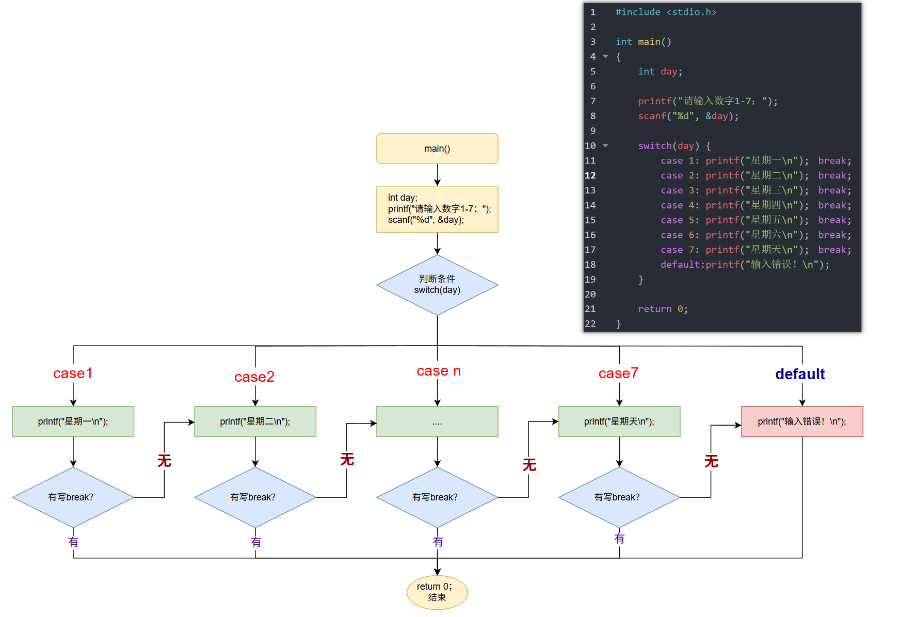

<!DOCTYPE lake>
<h1 data-lake-id="hDfa0" id="hDfa0"><span data-lake-id="ub47525ed" id="ub47525ed">0&gt; 功能需求</span></h1><p data-lake-id="ud5089b04" id="ud5089b04"><span data-lake-id="ufed29a67" id="ufed29a67">使用switch-case语句，完成星期转换</span></p><p data-lake-id="u1c8659d8" id="u1c8659d8"><span data-lake-id="ue267fa45" id="ue267fa45">输入数字1-7，输出对应的星期几（1=星期一，7=星期日）</span></p><hr/><h1 data-lake-id="Rjd81" id="Rjd81"><span data-lake-id="u30bee3cf" id="u30bee3cf">1&gt; 程序设计</span></h1><p data-lake-id="udf5cd994" id="udf5cd994"><span data-lake-id="u7ac5d645" id="u7ac5d645">语法格式</span></p><span class="yuque-card-unsupported">[codeblock]</span><p data-lake-id="u1cb7d538" id="u1cb7d538"><span data-lake-id="u93840b30" id="u93840b30">示例</span></p><span class="yuque-card-unsupported">[codeblock]</span><hr/><h1 data-lake-id="QcJIN" id="QcJIN"><span data-lake-id="u95ce3f0a" id="u95ce3f0a">2&gt; 语法基础</span></h1><span class="yuque-card-unsupported">[codeblock]</span><p data-lake-id="ub14167f9" id="ub14167f9"></p><p data-lake-id="u92dd14ce" id="u92dd14ce"><span data-lake-id="ubfaa011e" id="ubfaa011e">执行过程：</span></p><p data-lake-id="u4b0030eb" id="u4b0030eb"><span data-lake-id="u3e162615" id="u3e162615">计算 switch(表达式) 的值（必须是 整型 或 字符型）。</span></p><p data-lake-id="u58f4aa9d" id="u58f4aa9d"><span data-lake-id="ub68110fe" id="ub68110fe">依次匹配 case，找到与表达式值相等的 case，执行其代码块。</span></p><p data-lake-id="u1f725092" id="u1f725092"><span data-lake-id="uc207cffd" id="uc207cffd">遇到</span><strong><span data-lake-id="u09bfef10" id="u09bfef10" style="color: #7E45E8"> </span></strong><code data-lake-id="uc46bad53" id="uc46bad53"><strong><span data-lake-id="u9ba6d893" id="u9ba6d893" style="color: #7E45E8">break</span></strong></code><span data-lake-id="uf29076ee" id="uf29076ee">; 则 结束 </span><code data-lake-id="u4fc0119f" id="u4fc0119f"><span data-lake-id="uc0b50fde" id="uc0b50fde">switch</span></code><span data-lake-id="udcdc068a" id="udcdc068a">，</span><span data-lake-id="u18a557c2" id="u18a557c2" style="color: #DF2A3F">否则</span><span data-lake-id="u5dd61c4f" id="u5dd61c4f">会 继续执行下一个</span><code data-lake-id="uc181eb92" id="uc181eb92"><span data-lake-id="u5ef1c63f" id="u5ef1c63f"> case</span></code><span data-lake-id="ufda15d14" id="ufda15d14">（</span><span data-lake-id="u200d54fe" id="u200d54fe" style="color: #DF2A3F">穿透</span><span data-lake-id="u7eb3979b" id="u7eb3979b">😯</span><span data-lake-id="u53762cca" id="u53762cca">）。</span></p><p data-lake-id="u01f83cb0" id="u01f83cb0"><span data-lake-id="u47c6f947" id="u47c6f947">如果没有匹配的 case，则执行 </span><code data-lake-id="ufd1e0f01" id="ufd1e0f01"><strong><span class="lake-fontsize-14" data-lake-id="u98fbd3fd" id="u98fbd3fd" style="color: #2F4BDA">default</span></strong></code><span data-lake-id="u0f1907b8" id="u0f1907b8">。</span></p><hr/><h1 data-lake-id="gbRao" id="gbRao"><span data-lake-id="u259ce054" id="u259ce054">🐻</span><span data-lake-id="u56f8ce18" id="u56f8ce18">实践练习：</span></h1><p data-lake-id="u32260116" id="u32260116"><br/></p><p data-lake-id="uebf276af" id="uebf276af"><span data-lake-id="u6ca55b22" id="u6ca55b22">习题 1&gt; 简易计算器</span></p><p data-lake-id="ud46792e6" id="ud46792e6"><span data-lake-id="u2c3da810" id="u2c3da810">题目：输入两个数和一个运算符（+ - * /），输出计算结果。</span></p><span class="yuque-card-unsupported">[codeblock]</span><hr/><p data-lake-id="u40fa81e3" id="u40fa81e3"><span data-lake-id="u7a0ad839" id="u7a0ad839">习题 2&gt; 输入年和月份 （1-12），输出该月的天数（注意闰年）</span></p><span class="yuque-card-unsupported">[codeblock]</span>